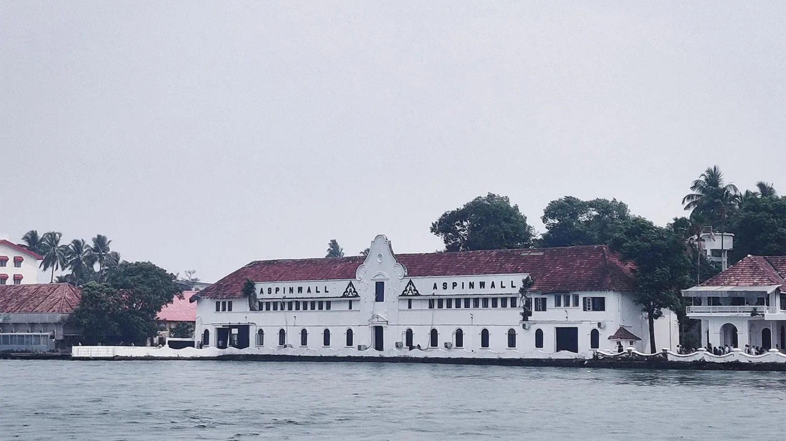
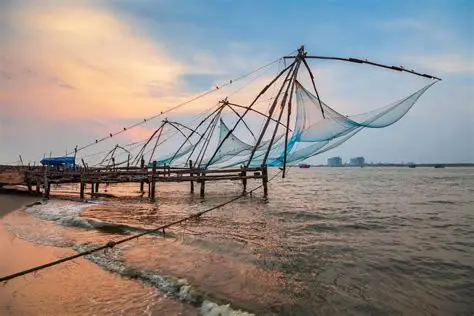
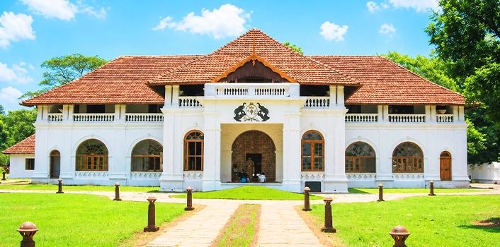
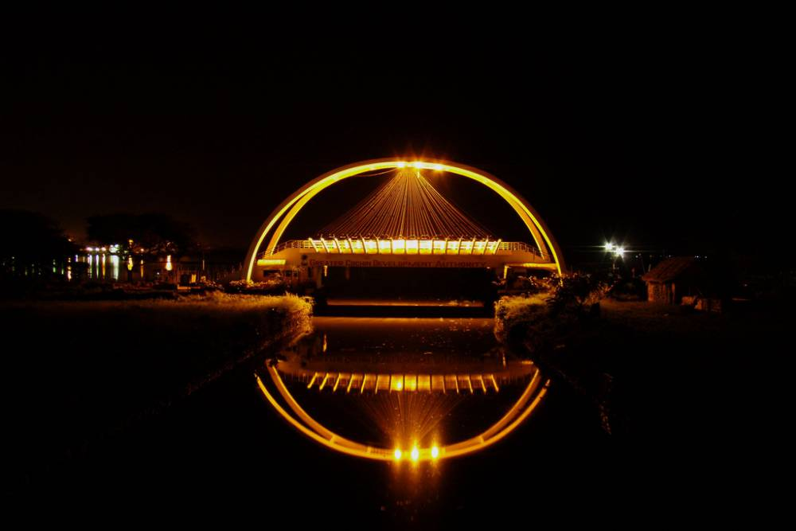

01

KOCHI
Fort Kochi
Explore the historic streets, colonial architecture and charming waterfront of Fort Kochi.
Discover historic streets, heritage landmarks, coastal views and the vibrant culture of Kerala's beautiful port city.
Book Your Kochi Trip →Plan your Kochi sightseeing trip with Jaihind Cabs.

Explore the historic streets, colonial architecture and charming waterfront of Fort Kochi.

See the iconic traditional fishing nets along the waterfront and experience one of Kochi's famous landmarks.

Discover Kerala's royal heritage through historic architecture, murals and traditional collections.
Visit the historic synagogue in Mattancherry and explore an important part of Kochi's multicultural heritage.

Enjoy a relaxing waterfront walk and beautiful views across the Kochi backwaters.
Book a comfortable cab for your Kochi sightseeing journey.